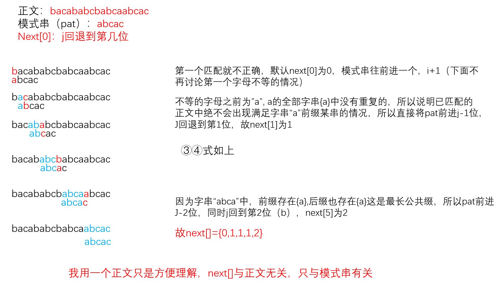
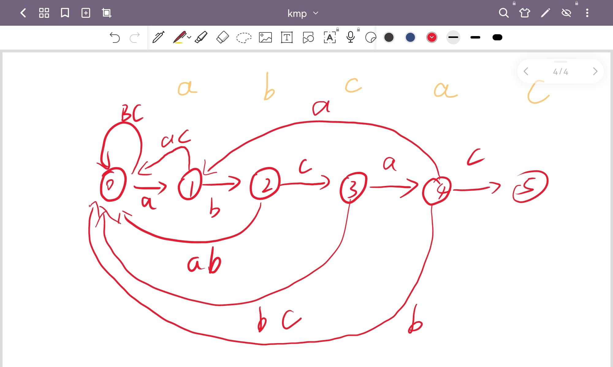

软考复习之KMP算法
KMP算法
KMP算法我曾今写过一篇博客讲过，但是我当时觉得这个算法好烂，就没细讲，后来发现他们还挺喜欢考这个算法的，于是我再开帖讲一下
自然语言描述
自然语言描述是我根据《algorithm》的内容以及我自己的理解写出来的，，一般来说是正确的计算next[]与解释KMP的算法，这个方法比较考验悟性，但是原理确实是这样😂

考研教材解释
我们还是拿pat=abcac举例子，我们从a开始取字串，然后找前缀与后缀的最长相等长度
”a“最长相等长度为0
“ab”最长相等长度0
“abc”最长相等长度0
“abca”最长相等长度1
“abcac”最长相等长度0
所以我们可以得到PM={0,0,0,1,0}
但是我们有公式右移位数=已匹配的字符数-对应的部分匹配值
然后 对应的部分匹配值 是 j 前一个值，于是为了方便我们把PM整体右移一位，并用-1作为next[0]的值，得到next[]={-1,0,0,0,1}
所以我们有公式：
Move=(j-1)-next[j]
这就相当于我们将J回退到：
j回退到的位置=j-Move=j-((j-1)-next[j])=next[j]+1
所以我们就可以都得到next[]的新的形式：
next[]={0,1,1,1,2}
这里next[]的含义是在j处匹配失败后，j回退到的位置
拓展：更底层的匹配方法
实际上，KMP算法应该生成一个有限状态自动机（DFA），然后通过DFA去匹配字串
继续按照pat=abcac为例，画出的DFA如下：

生成DFA的算法如下
1 | |
软考复习之KMP算法
2022/09/18/qccstp/kmp/